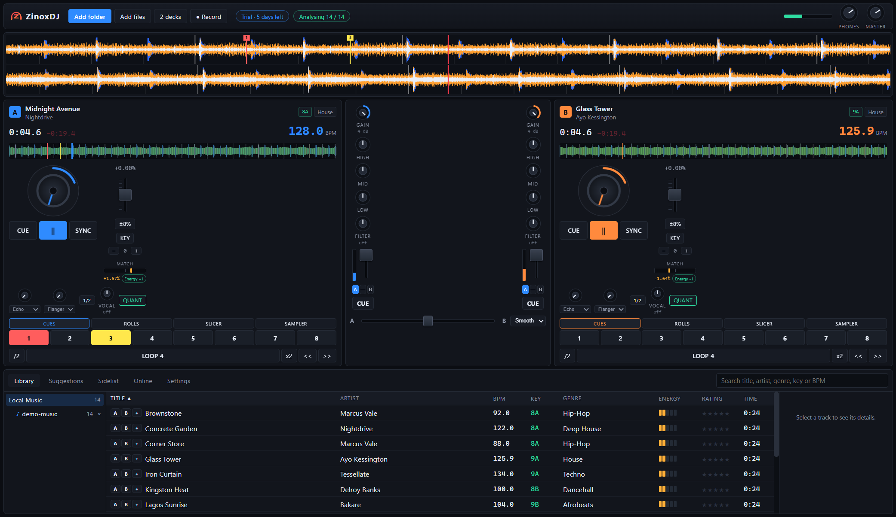
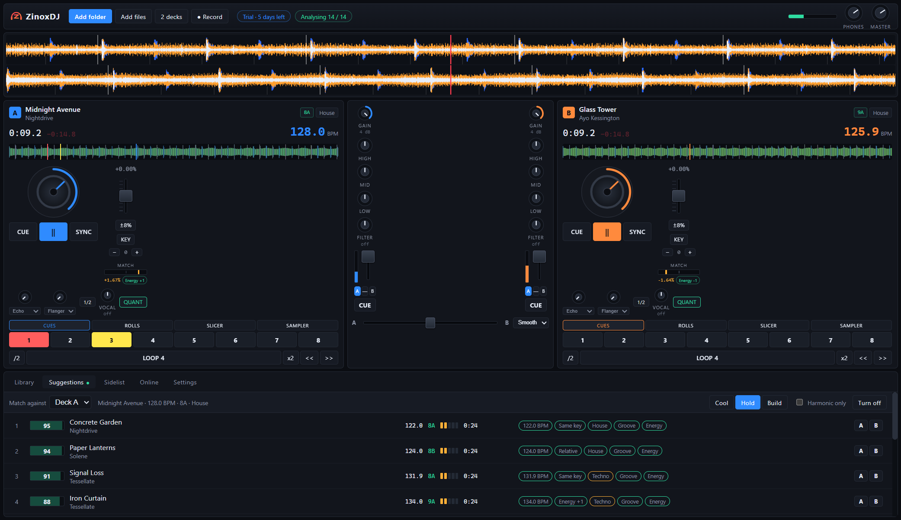

Two decks, four on demand
Jog wheels that bend and scrub, scrolling waveforms with a beat grid, key lock, and sync that matches tempo and beat position.
Desktop software · Windows & macOS · Free 7-day trial
ZinoxDJ is a full DJ workstation — two decks, jog wheels, a three-band mixer, pads and effects. What it adds is knowledge of your own library: it listens to every track once, then ranks what mixes well with whatever is playing, by tempo, musical key, genre, groove and energy.

What you get
Everything below is in the trial build. Nothing is held back for the paid version.
Jog wheels that bend and scrub, scrolling waveforms with a beat grid, key lock, and sync that matches tempo and beat position.
Killable EQ, a single-knob filter, level meters, crossfader with three curves, and per-channel crossfader assign.
Hot cues, momentary loop rolls, a slicer over the current bar, and a sampler that grabs four beats straight off the deck.
Echo, flanger, reverb, phaser, gate and crusher, with the tempo-synced ones following the deck's BPM.
Folder tree, artwork, star ratings, play history, and search that matches BPM and key as well as text.
Build a sidelist, or let ZinoxDJ load, beat match and crossfade the next track by itself.
Search the online catalogues, or connect your Spotify and Audiomack accounts to import your playlists. Every track is checked against your library, so a playlist opens as you own 34 of 60 and you know exactly what to go and get.
The difference
Analysis runs in the background and is cached, so each track is studied a single time. After that, ZinoxDJ can tell you what fits.
Add a folder. Your files are never copied, moved or changed — ZinoxDJ stores paths and what it works out about each track.
Tempo to a tenth of a beat with a beat grid, musical key on the Camelot wheel, energy, genre, and the rhythmic feel of the drums.
Every suggestion carries a match score and the reasons behind it, so you can see why a track was picked rather than take it on trust.

System requirements
Being straight with you
Worth knowing before you download, rather than after.
There is a vocal/instrumental knob, but it works on the stereo image rather than separating stems, so it will not work cleanly on every track.
ZinoxDJ mixes audio only.
No control from timecode vinyl or CDJs. MIDI controllers are supported, with a learn mode.
You can connect Spotify and Audiomack to import your playlists, but the audio itself cannot be played through the decks. Spotify’s player is DRM-sealed, and streaming for DJ use is licensed by commercial agreement rather than by API key. ZinoxDJ mixes the files you own.